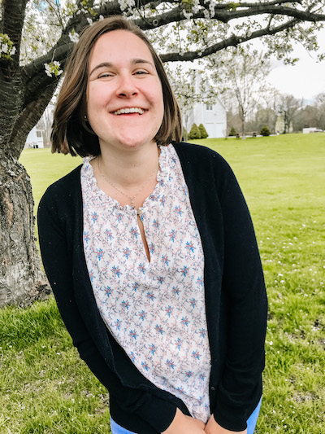

Welcome to my portfolio!
Hello! I'm Emily Bevacqua, currently residing in New York. I am a graduating senior at the University of Massachusetts Amherst where I major in English with a minor in Informational Technology. I have a specialization in the Study and Practice of Writing () and I currently am completing a certificate in Professional Writing and Technical Communication ().
When I'm not in class, you can find me helping students engage with their writing as a tutor in the virtual writing center. You may also recognize me from online platforms where I am frequently spreading the word about the official English Department undergraduate literary journal, Jabberwocky, where I am the Editor in Chief.
Discovering My Goals
In middle school, I picked up the series The Hunger Games by Suzanne Collins and instantly fell in love with literature. Ever since that moment, I became a reading monster, devouring any book put into my path, craving new worlds to explore and adventures to go on. It was no surprise to me when the time came to pick a major, I would pursue an English degree.
I knew from my experience that reading was important to a growing individual's mind. I also knew, I wanted to help foster that impact.
Looking to inspire the youth to find their inner reading monster, I want to spread literacy by encouraging reading, providing opportunities to read, and publishing empowering stories.